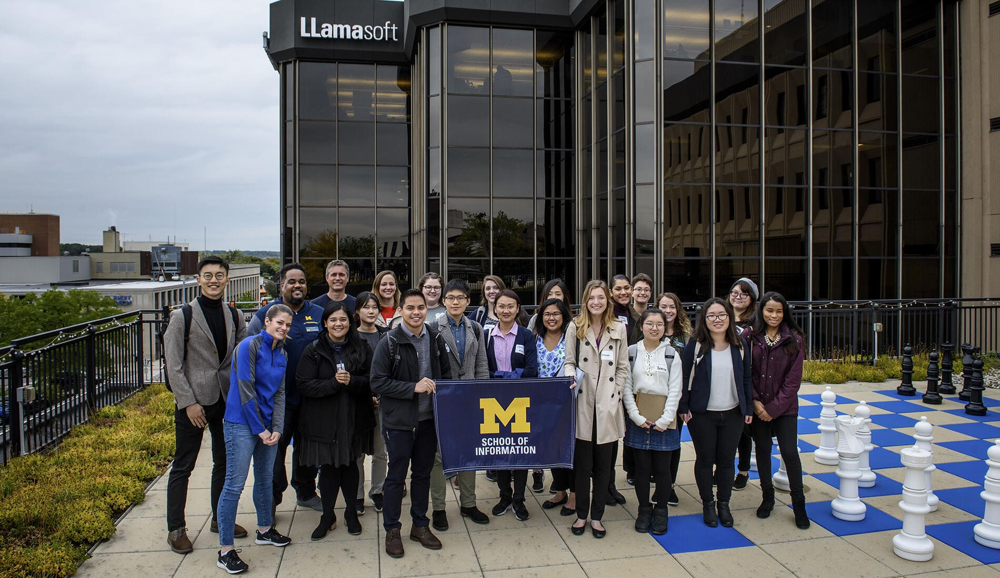

Career Guidance for Professional Success
Ready to take the next step toward your future career?
The UMSI Career Development Resource Hub is your one-stop shop for trusted guidance,
practical tools, and the latest information to help you thrive as a student and job-seeker.
Whether you are just starting your exploration or getting ready to launch your career, you will find
everything you need, organized for you.
The UMSI Career Development Office works to provide UMSI students with
strategic, customized and comprehensive career services.
We do much more than help students find jobs as they near graduation.
We are with you every step of the way coaching, empowering and supporting you from orientation through to commencement.
We offer career coaching, career courses to prepare you for your internship search, workshops to help you develop
effective job search skills, and interview preparation as well as a robust on-campus recruiting program and career fair
to provide you with access to many employers who want to hire you.
Everything we do is designed to help you achieve career success for a lifetime.
Career Development Resources
Career Coaching

Profession & Peer Career Coaching
The Career Development Office includes a team of career coaches who work with students one-on-one to support them in achieving their career-related goals.
This looks different from student to student and session to session. We use a coaching model centered on what the student individually needs at the moment.
Current students have many options for engaging with the coaching team (scheduled sessions, drop ins and tabling).
Check out this page to schedule a coaching session, find tips for preparing for a session, and see drop-in opportunities.
Direct any career-related questions to umsi.careers@umich.edu
All UMSI students also have the valuable opportunity to receive peer career coaching from UMSI students who have gone through the internship search
process successfully and are trained to help others achieve success as well. Peer coach sessions can be scheduled on CareerLink.
Find jobs and internships

UMSI CareerLink
UMSI CareerLink offers on-demand access to career support: internships, jobs, career coaching, career-building resources, special events and more.
This online tool, which replaces the iTrack platform, is exclusively for enrolled UMSI students and alumni.
Check the latest opportunities from vetted employers who are looking for people with UMSI skills.
Research employers through our company profiles and get notified about new jobs, internships or events in the industries you prefer.
Manage your entire search process, from applications to offers, all in one place. See opportunities.
Career education
Credit-based Career Education Courses
All UMSI students have access to comprehensive career education opportunities led by experts from the Career Development Office team.
These opportunities are offered through multiple formats and are designed to provide equity in career education for all UMSI students including
credit-based courses and co-curricular workshops as well as employer-related activities. These career education opportunities are designed to offer
students opportunities for self-assessment, career exploration, job and internship search readiness and long term career management and success.
Visit this page to gain more information about
Career & Internship studio courses, as well as Co-curricular career education workshops and
Employer-related career education activities
Connect with the UMSI Career Development Office!
E-mail addresses
Academic Success: umsi.academicsuccess@umich.edu
Admissions: umsi.admissions@umich.edu
Career Development: umsi.careers@umich.edu
Postal addresses
School of Information
University of Michigan
2200 Hayward St.
Ann Arbor, MI 48109